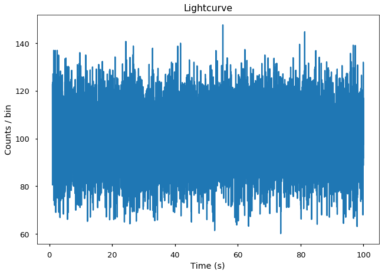
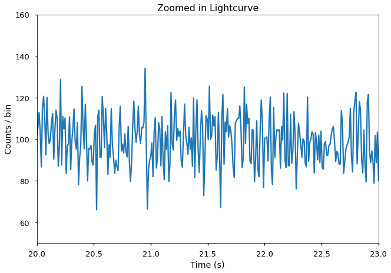
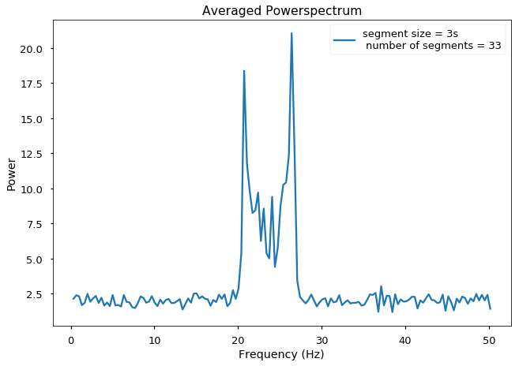
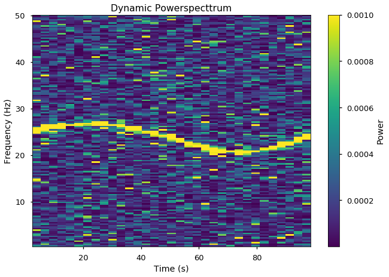
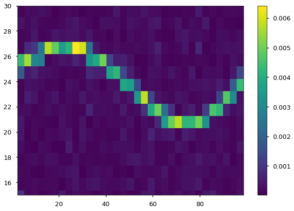
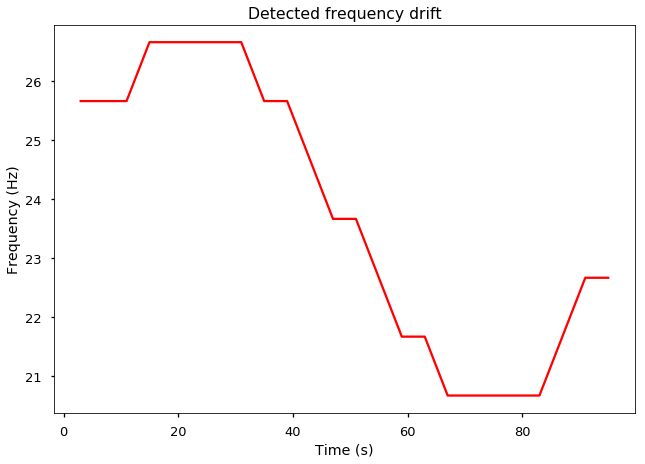
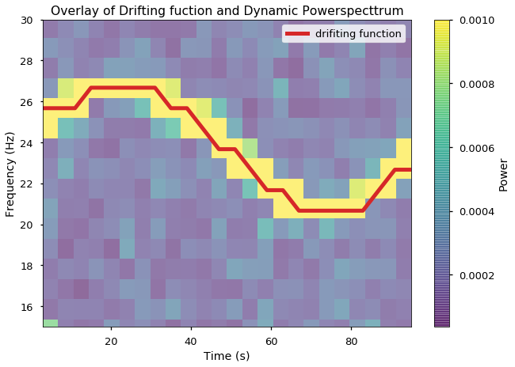

Dynamical Power Spectra (on fake data)¶
[1]:
%matplotlib inline
[2]:
# import some modules
import numpy as np
import matplotlib.pyplot as plt
import stingray
[3]:
# choose style of plots, `seaborn-talk` produce nice big figures
plt.style.use('seaborn-talk')
Generate a fake lightcurve¶
[4]:
# Array of timestamps, 10000 bins from 1s to 100s
times = np.linspace(1,100,10000)
# base component of the lightcurve, poisson-like
# the averaged count-rate is 100 counts/bin
noise = np.random.poisson(100,10000)
# time evolution of the frequency of our fake periodic signal
# the frequency changes with a sinusoidal shape around the value 24Hz
freq = 25 + 1.2*np.sin(2*np.pi*times/130)
# Our fake periodic variability with drifting frequency
# the amplitude of this variability is 10% of the base flux
var = 10*np.sin(2*np.pi*freq*times)
# The signal of our lightcurve is equal the base flux plus the variable flux
signal = noise+var
[5]:
# Create the lightcurve object
lc = stingray.Lightcurve(times, signal)
Visualizing the lightcurve¶
[6]:
lc.plot(labels=['Time (s)', 'Counts / bin'])
plt.title('Lightcurve')
[6]:
<matplotlib.text.Text at 0x7fabaa006630>

Zomming in..¶
[7]:
lc.plot(labels=['Time (s)', 'Counts / bin'], axis=[20,23,50,160])
plt.title('Zoomed in Lightcurve')
[7]:
<matplotlib.text.Text at 0x7faba9f36e48>

A power spectrum of this lightcurve..¶
[8]:
ps = stingray.AveragedPowerspectrum(lc, segment_size=3, norm='leahy')
[9]:
plt.plot(ps.freq, ps.power, label='segment size = {}s \n number of segments = {}'.format(3, int(lc.tseg/3)))
plt.title('Averaged Powerspectrum')
plt.xlabel('Frequency (Hz)')
plt.ylabel('Power')
plt.legend()
[9]:
<matplotlib.legend.Legend at 0x7faba9e66d30>

It looks like we have at least 2 frequencies.¶
Let’s look at the Dynamic Powerspectrum..¶
[10]:
dps = stingray.DynamicalPowerspectrum(lc, segment_size=3)
[11]:
extent = min(dps.time), max(dps.time), min(dps.freq), max(dps.freq)
plt.imshow(dps.dyn_ps, aspect="auto", origin="lower", vmax=0.001,
interpolation="none", extent=extent)
plt.title('Dynamic Powerspecttrum')
plt.xlabel('Time (s)')
plt.ylabel('Frequency (Hz)')
plt.colorbar(label='Power')
[11]:
<matplotlib.colorbar.Colorbar at 0x7faba9e3b5c0>

It is actually only one feature drifiting along time¶
# Rebinning in Frequency
[12]:
print("The current frequency resolution is {}".format(dps.df))
The current frequency resolution is 0.33443708609271494
Let’s rebin to a frequency resolution of 1 Hz and using the average of the power
[13]:
dps.rebin_frequency(df_new=1.0, method="average")
[14]:
print("The new frequency resolution is {}".format(dps.df))
The new frequency resolution is 1.0
Let’s see how the Dynamical Powerspectrum looks now
[15]:
extent = min(dps.time), max(dps.time), min(dps.freq), max(dps.freq)
plt.imshow(dps.dyn_ps, origin="lower", aspect="auto",
interpolation="none", extent=extent)
plt.colorbar()
plt.ylim(15, 30)
[15]:
(15, 30)

Rebin time¶
Let’s rebin our matrix in the time axis
[16]:
print("The current time resolution is {}".format(dps.dt))
The current time resolution is 3.0
Let’s rebin to a time resolution of 4 s
[17]:
dps.rebin_time(dt_new=4.0, method="average")
[18]:
print("The new time resolution is {}".format(dps.dt))
The new time resolution is 4.0
[19]:
extent = min(dps.time), max(dps.time), min(dps.freq), max(dps.freq)
plt.imshow(dps.dyn_ps, origin="lower", aspect="auto",
interpolation="none", extent=extent)
plt.colorbar()
plt.ylim(15,30)
[19]:
(15, 30)
Let’s trace that drifiting feature.¶
[20]:
# By looking into the maximum power of each segment
max_pos = dps.trace_maximum()
[21]:
plt.plot(dps.time, dps.freq[max_pos], color='red', alpha=1)
plt.xlabel('Time (s)')
plt.ylabel('Frequency (Hz)')
plt.title('Detected frequency drift')
[21]:
<matplotlib.text.Text at 0x7faba9bb6a90>

Overlaying this traced function with the Dynamical Powerspectrum¶
[22]:
extent = min(dps.time), max(dps.time), min(dps.freq), max(dps.freq)
plt.imshow(dps.dyn_ps, aspect="auto", origin="lower", vmax=0.001,
interpolation="none", extent=extent, alpha=0.6)
plt.plot(dps.time, dps.freq[max_pos], color='C3', lw=5, alpha=1, label='drifiting function')
plt.ylim(15,30) # zoom-in around 24 hertz
plt.title('Overlay of Drifting fuction and Dynamic Powerspecttrum')
plt.xlabel('Time (s)')
plt.ylabel('Frequency (Hz)')
plt.colorbar(label='Power')
plt.legend()
[22]:
<matplotlib.legend.Legend at 0x7faba9b51358>
